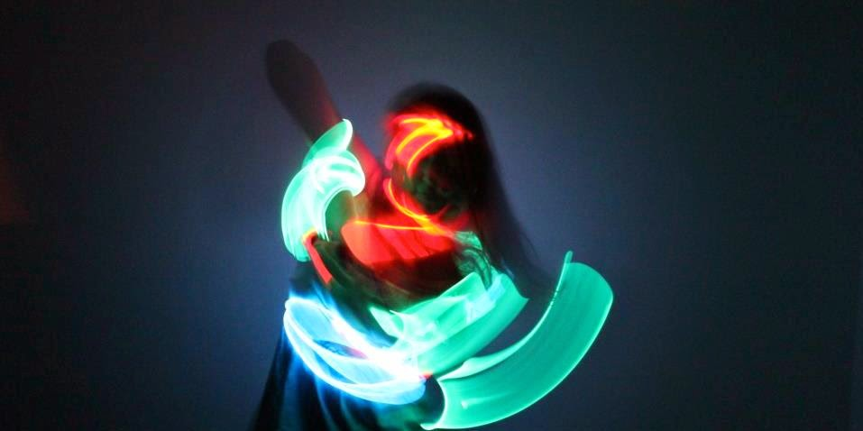

FESTIBORG: BOMBINA BOMBAST (SE) - 7 dgr/ SARPSBORG
- Kategori:
- Kurs med åpning for andre
Kurs med åpning for andre
Åpent for profesjonelle skuespillere. En viss åpning for andre utøvende kunstnere med relevant erfaring. Andre kunstnere må sende CV. - Dato:
- 15.08.2016 til 21.08.2016
- Start kl :
- 10:00
- Slutt kl :
- 18:00
- Pris:
- 1200,-
- Adresse:
- , Sarpsborg

Bombina Bombast - The Dreambox
- Creating A Dream - skap din del av The Dreambox!
En workshop i spilldramaturgi, Human Specific- og Teknologisk Teater.
Dato og klokkeslett
15.-17. august fra ca. kl 10-18 og 18.-21. august fra ca. kl 12-17
Bombina Bombast har skapt en spilldramaturgisk forestilling der publikum gjennom en-til-en-møter, i 12 små bokser, samler drømmefragmenter i jakten på den store utopi. Og gjennom workshopen “Creating a Dream” får skuespillere og scenekunstnere i Norge - i tillegg til å lære en rekke innovative teknikker - mulighet til å flytte inn i sin egen boks og ta del i forestillingen.
Deltagerne får:
- en innføring og utprøving av Human specific teater.
- en innføring i bruk av spillmekanismer og spilldramaturgi for å engasjere publikum.
- lage en 10-minutter lang forestilling for én publikummer av gangen.
- delta med sitt eget verk som en del av The Dreambox under FestiBorg 2016
- Arbeide praktisk under ledelse av et av Nordens fremste kompanier innen spillinspirert scenekunst
Kriterier
Workshopene er hovedsakelig for profesjonelle skuespillere som har fullført en treårig skuespillerutdanning på høgskolenivå eller har tilsvarende profesjonell erfaring. Men, vi er da alle folk som har noe å lære av hverandre, utdannet eller ikke, så til workshopen med Bombina Bombast og Pernille Lindstad vil vi også vurdere uutdannede aktører. - Legg i så tilfelle ved en liten tekst om deg selv og om hvorfor du ønsker å delta i din påmeldingsmail.
Praktisk informasjon
Ingen forberedelser kreves. Men ta med bevegelig tøy.
Påmelding
Send en mail med NAVN, CV og hvilken workshop du ønsker å delta på til workshop.festiborg@gmail.com
MERK! Ønsker du å være publikummer på resten av festivalen finnes det sterkt rabatterte kombinasjonsløsninger for workshopbillett og festivalpass. (Deltagerne på Bombina Bombast workshopen vil spille under festivalen og er som artister å regne og behøver således ikke kjøpe festivalpass)
The Dreambox er en forestilling der 12 bokser/telt á 2x2 meter står plassert rundt på festivalområdet. Hver boks inneholder en liten forestilling, og publikum beveger seg etter spillereglene mellom boksene. Alle boksene sirkler rundt temaet drømmer - nærmere bestemt de vanligste drømmene som alle mennesker drømmer jorden rundt. Som å fly, falle, snakke med dyr, eller og glidende skifte av tid, sted eller person. Hvordan gestalter vi den drømmen eksklusivt for en person i om gangen? Og hvordan bruker vi spill som verktøy for å skape om dette til et engasjerende teater?
The Dreambox spilles torsdag 18.-søndag 21. August i Kulåsparken.
Les mer om forestillingen på www.festiborg.no og http://www.bombinabombast.se/
Bombina Bombast er en tverrestetisk svensk teatergruppe basert i Malmö. Emma Bexell & Stefan Stanisic har ledet kompaniet siden starten i Stockholm i 2011. De er i dag pionerer innen spilldramaturgisk teater og teater i kombinasjon med innovative teknologier, spesielt virtual reality - med Oculus Rift og 360 graders filming som sentrale elementer), men også video- og audiowalks samt live-video. Kompaniet utfordrer publikum i alt fra små forestillinger for en person om gangen til store verk der publikum vandrer fritt i fullstendige omsluttede verdener, eller verk hvor klassisk teater på ulike måter møter film. De har blitt presentert på arenaer og festivaler i Sverige, Danmark, Finland, Norge og Spania.
FestiBorgs Workshop-program:
FestiBorg strekker seg mot å være en toneangivende møteplass for nyskapende scenekunstnere, og skaper derfor en rekke arenaer der du sammen med andre kunstnere kan oppdage nye metoder - arbeide, diskutere, reflektere sammen og få stimulert måten vi ser på kunsten, samfunnet og vår rolle i det hele. Vi ønsker å utfordre våre deltagere til å tenke nytt – ikke fordi man har tenkt feil tidligere, men for å utvide horisonten, og sin idé om hva teateret kan være og gjøre. Samtidig vil vi skape en atmosfære der aktørene er trygge på sine kvaliteter og har mulighet til selv å dele og lære bort.
For teaterworkshops for ungdom klikk her: http://festiborg.no/teatercamp-for-ungdom/
Overnatting
Som deltager på workshopen tilbys du å overnatte med arrangørene, og deltagerne på «Hjemmealenefest» på festivalcampen like ved festivalen i Kulåsparken. Her blir det bl.a. morgentrening og grilling og fotball på kveldene.
(Ta med telt, soveutstyr og andre campingnødvendigheter)
Morgentrening
- Åpent for alle uavhengig av workshop
For å samle folk også på tvers av de valgte workshopene vil vi starte hver dag med felles morgentrening. Morgentreningen vil fortsette gjennom hele festivalen, og vil således også bli et tilbud til publikum.
Dette er viktig for oss for å åpne opp for en fysisk tilnærming til scenekunsten, for å utvide aktørenes fysiske spekter, og fordi det finnes ingen bedre måte å starte dagen på, eller å bli kjent med nye på enn gjennom ei litta dans.
Pris for NSF-medlemmer og alle under 30: 1000,-
I samarbeid med:


{kind=link}
{kind=link}
{kind=link}
{kind=link}
{kind=link}
{kind=link}
{kind=link}
{kind=link}